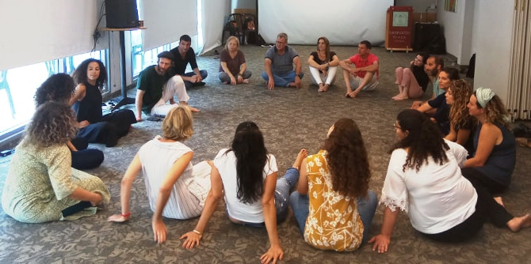

Around everything that is perfected,
the unfinished ascends and intensifies.
― Rainer Maria Rilke, The Notebooks of Malte Laurids Brigg
The first year of studies of the Mandel Program for Local Leadership in Eilat-Eilot concluded with a retreat in Ashdod, led by
Dr. Nitza Roskin, the program director. The retreat was part of the program’s study unit on leadership, and included in depth explorations of issues related to leadership, acts of leadership, and the values that underpin leadership.
The retreat, which was held on June 6–7, began on the balcony of the Ashdod Art Museum, where the fellows heard
Yuval Biton, the museum’s head curator, speak about the city of Ashdod's recent developments in culture and the arts. Over the course of the retreat, the fellows participated in workshops, discussions led by their peers, and discussions that processed the past year with an eye toward the year to come. The evening was given over to a session on the beach led by
Hanit Guli, one of the program fellows. The retreat closed with a "Biodanza" movement workshop led by
Yochai Leshem, which created an experience of connection and allowed fellows to examine individual and group leadership.
The retreat included both practical and experiential sessions, summarized the year gone by, and looked forward to the coming year. It strengthened the fellows’ sense of belonging to the group and emphasized the need for them to formulate ideas for action during the summer break. The fellows reviewed their personal development as value-driven leaders, who aim to formulate vision and real-world action in the coming year.

{kind=link}